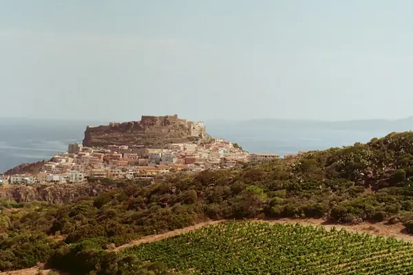

Home › Wine regions › Sardinia
Sardinia wine region

Photo: Oscar Scannell on Unsplash
Island wines with a Mediterranean character.
Vines grow in all 20 regions. Wines are classed DOCG, DOC and IGT.
CountryItaly
Key grapesCannonau, Vermentino, Carignano
Notable producers in Sardinia
- Argiolas
- Sella & Mosca
- Santadi
- Capichera
- Contini
Official appellations
| Appellation | Status | Style | Grapes |
|---|---|---|---|
| Cannonau di Sardegna (1972) Island-wide DOC for Sardinia's Grenache: at least 85% Cannonau (90% for Classico). Sub-zones Oliena (Nepente di Oliena), Jerzu and Capo Ferrato; Riserva ages 2 years with at least 6 months in wood. | DOC | Red, Rosé, Sweet, Fortified | Cannonau |
Sardinia wines to try
More wine regions in Italy
TuscanyPiedmontVenetoSicilyAosta ValleyLombardyTrentino-Alto AdigeFriuli-Venezia GiuliaLiguriaEmilia-RomagnaUmbriaMarcheLazioAbruzzoMoliseCampaniaPugliaBasilicataCalabria
Support The Wine Reference
This guide is free, with no paywall. If it helped you choose a bottle, you can buy me a glass and keep it growing.
🍷 Buy me a glass